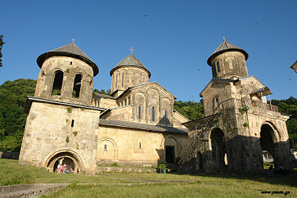

get to know georgia
გელათის მონასტერი — ქართული ხუროთმოძღვრული ანსამბლი, შუა საუკუნეების საქართველოს კულტურის უმნიშვნელოვანესი ცენტრი, იუნესკოს მსოფლიო კულტურული მემკვიდრეობის და საქართველოს ეროვნული მნიშვნელობის კულტურის ძეგლი. აგებულია ქუთაისის ჩრდილო-აღმოსავლეთით 11 კმ-ზე, მდინარე წყალწითელის ხეობაში. დაარსებულია 1106 წელს დავით აღმაშენებლის თაოსნობით. შემოზღუდულია გალავნით. ანსამბლში შედის სხვადასხვა დროინდელი (ძირითადად XII-XIII სს.) შენობები. სახელწოდება „გელათი“ შესაძლოა მომდინარეობდეს იერუსალიმის ერთ-ერთი კარიბჭის „გენნათის“ სახელიდან.[1]

გელათის მონასტრის გალავნის სამხრეთით, მთავარ შესასვლელში, დავით აღმაშენებლის საფლავია. გელათის მონასტერი სამეფო სახლის საკუთრება და საძვალე იყო, ტერიტორიულად ახლოს მდებარეობდა სამეფოს პოლიტიკურ ცენტრთან - ქუთაისთან, აქ არის დასაფლავებული სრულიად საქართველოს თითქმის ყველა მეფე: დავით IV აღმაშენებელი, დემეტრე I, გიორგი III, თამარი (თამარის ისტორიკოსების ცნობით) და სხვა. იმერეთის მეფეები: ბაგრატ III, გიორგი II, გიორგი III, გიორგი VI, ალექსანდრე V, სოლომონ I და სხვა.
გელათის მონასტერი ერთ-ერთი მდიდარი ფეოდალური სენიორია იყო. მის მფლობელობაში ითვლებიდა ვრცელი მიწა-წყალი. მეურნეობაში წამყვანი დარგი იყო მიწათმოქმედება, განვითარებული მევენახეობა, ღვინის, თაფლისა და სანთლის სასაქონლო-საბაზრო წარმოება მონასტერს დიდ ფულად შემოსავალს აძლევდა.
XII-XV საუკუნეებში გელათის მონასტერს მინიჭებული ჰქონდა სრული ავტონომია, აღიარებდა მხოლოდ მეფის უმაღლეს უფლებას. საქართველოს კათოლიკოს-პატრიარქსაც კი არ ჰქონდა არავითარი სახელისუფლო ძალა (გარდა მღვდლების კურთხევისა). გელათის მონასტერში მეფეს ჰყავდა თავისი პირადი წარმომადგენელი. მონასტრის უფროსი მონაზვნები და მოძღვართმოძღვარი სამეფო დარბაზის წევრებად ითვლებოდნენ. XIII საუკუნის II ნახევარსა - XV საუკუნეში ქვეყნის პოლიტიკური-ეკონომიური დაკნინების გამო (მონღოლების, თემურლენგის შემოსევები, გამწვავებული შინაფეოდალური საადგილმამულო ბრძოლები) გელათის მონასტრის ეკონომიური და კულტურული ცხოვრება შეფერხდა. მისი ძველი მდგომარეობა ნაწილობრივ აღადგინა გიორგი ბრწყინვალემ.
საქართველოს პოლიტიკური დაშლის (XV საუკუნის II ნახევარი) შემდეგ გელათის მონასტერი დასავლეთ საქართველოს მეფეების ხელში გადავიდა. 1510 წლის 23 ნოემბერს იგი გადაწვა იმერეთში შემოჭრილმა ოსმალთა ჯარმა. იმერეთის მეფეებმა ბაგრატ III-მ და გიორგი II-მ გელათის მონასტერში დიდი მასშტაბის სამეურნეო და საამშენებლო სამუშაოები ჩაატარეს - კაპიტალურად შეაკეთეს და მოხატეს ტაძრები, განაახლეს გაუქმებული და მიტოვებული ეკლესია-ეკვდერები, შესწირეს მონასტერს ახალი მამულები. ბაგრატ III-ს თანამედროვენი გელათის "მეორედ აღმშენებელს" უწოდებდნენ. მას მხარში ედგნენ გელათის ეპისკოპოსი მელქისედეკ საყვარელიძე და დასავლეთ საქართველოს კათოლიკოს-პატრიარქი ევდემონ ჩხეტიძე. XVI საუკუნის 20-იან წლებში ბაგრატ III-მ გელათის მონასტერში საეპისკოპოსო კათედრა დააარსა, რამაც გარკვეულად აამაღლა მონასტრის პოლიტიკური-მორალური და ეკონომიური მდგომარეობა. XVI საუკუნის II ნახევარში დასავლეთ საქართველოს კათოლიკოს-პატრიარქის რეზიდენცია ბიჭვინთიდან გელათში გადმოიტანეს.
XVIII საუკუნიდან გელათის მონასტერში დიდი მასშტაბის აღდგენითი სამუშაოები გასწიეს გიორგი VI-მ, ალექსანდრე V-მ, სოლომონ I-მა, სოლომონ II-მ და გელათის ეპისკოპოსებმა. XVIII საუკუნის დამლევს მონასტერი ფლობდა 42 სოფელს.
რუსეთის იმპერიის მიერ იმერეთის სამეფოს გაუქმების (1810) შემდეგ გელათის მონასტერი საეკლესიო სენიორიიდან სახელმწიფო დაწესებულებად - შტატის მონასტრად იქცა.
ჯერ კიდევ XII საუკუნეში, დავით აღმაშენებლის თაოსნობით, გელათის მონასტერში დიდი შემოქმედებითი საქმიანობა გაჩაღდა. სხვადასხვა დროს აქ მოღვაწეობდნენ არსენ იყალთოელი, იოანე პეტრიწი, არსენ ბულმაისიმისძე, პეტრე გელათელი, ევდემონ ჩხეტიძე (1557-1578), ექვთიმე საყვარელიძე (1578-1616), გედეონ ლორთქიფანიძე (XVII ს.), ანტონ I, ზაქარია გაბაშვილი და სხვა. 1923 წელს გელათის მონასტერი დახურეს. ამჟამად იგი ქუთაისის სახელმწიფო ისტორიულ-ეთნოგრაფიული მუზეუმის ფილიალია.
1994 წელს ბაგრატის ტაძართან ერთად მიიღო იუნესკოს მსოფლიო მემკვიდრეობის ძეგლის სტატუსი. 2006 წლის 7 ნოემბერს, მიენიჭა საქართველოს კულტურის ეროვნული მნიშვნელობის კატეგორიის ძეგლის სტატუსი. 2010 წელს ბაგრატის ტაძარს მასზე დაწყებული სარეკონსტრუქციო სამუშაოების გამო მიენიჭა საფრთხის ქვეშ მყოფი ძეგლის სტატუსი, რაც ასევე შეეხო გელათის მონასტერს. 2010-2017 წლებში ძეგლი იმყოფებოდა საფრთხის ქვეშ მყოფი ძეგლების სიაში, სიიდან ამოიღეს 2017 წლის 10 ივლისს[5]. 2017 წლიდან ბაგრატის ტაძრისგან დამოუკიდებლად არის აღრიცხული მსოფლიო მემკვიდრეობის სიაში.